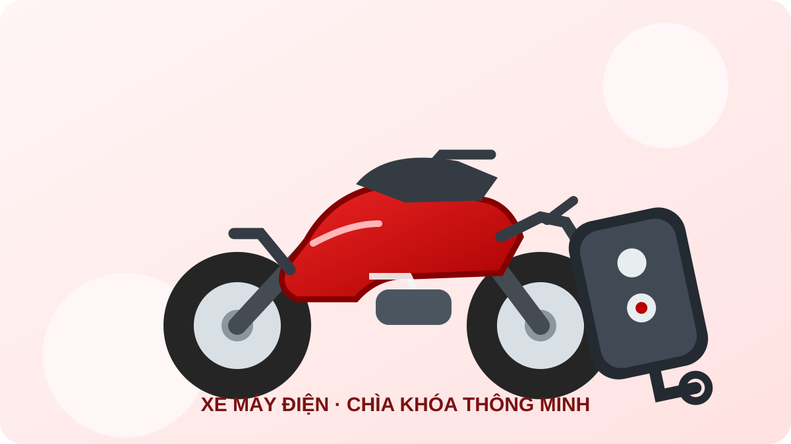

Làm chìa khóa xe máy điện VinFast tại Vân Đồn

Xe máy điện VinFast không còn chìa hoặc chìa gặp trục trặc có thể khiến việc đi lại bị gián đoạn. THỢ KHÓA LƯU ĐỘNG tiếp nhận thông tin tại Vân Đồn để trao đổi khả năng hỗ trợ theo mẫu xe và hệ thống khóa thực tế.
Liên hệ: 090 402 6204
Các trường hợp có thể cần hỗ trợ
- Mất chìa đang sử dụng hoặc thất lạc chìa dự phòng.
- Chìa hoặc bộ điều khiển không phản hồi như bình thường.
- Cần hỏi phương án làm thêm chìa dự phòng cho xe.
Thông tin nên chuẩn bị
Khi gọi, hãy cho biết mẫu xe VinFast, vị trí hiện tại tại Vân Đồn, tình trạng còn chìa hay đã mất hết chìa và dấu hiệu đang gặp phải. Nếu có, chuẩn bị giấy tờ chứng minh quyền sử dụng xe để hỗ trợ xác minh. Khả năng thực hiện và thời gian đến nơi cần được xác nhận qua điện thoại trước.
Hỗ trợ tại Vân Đồn
Khách hàng ở khu vực trung tâm Vân Đồn và các địa điểm lân cận nên cung cấp vị trí cụ thể khi gọi để trao đổi lịch phù hợp. Gọi trước để xác nhận khả năng hỗ trợ, mẫu xe và thời gian dự kiến; không nên tự ý đấu nối dây điện hoặc tháo cụm khóa nếu chưa nắm rõ cấu tạo xe.
Nếu bạn đang ở Cẩm Phả, xem thêm trang làm chìa khóa xe máy điện VinFast tại Cẩm Phả. Có thể tham khảo hướng dẫn khi mất hết chìa khóa xe máy để chuẩn bị thông tin trước khi liên hệ.
Câu hỏi thường gặp
Mất hết chìa khóa xe máy điện VinFast thì cần làm gì?
Chuẩn bị thông tin mẫu xe và giấy tờ chứng minh quyền sử dụng xe để trao đổi phương án phù hợp.
Có thể làm chìa cho mọi mẫu xe VinFast không?
Khả năng hỗ trợ tùy mẫu xe, hệ thống khóa và tình trạng xe. Hãy gọi trước để xác nhận.
Khi gọi thợ cần cung cấp thông tin gì?
Cho biết mẫu xe, vị trí tại Vân Đồn, tình trạng còn chìa hay mất hết chìa và số điện thoại liên hệ.